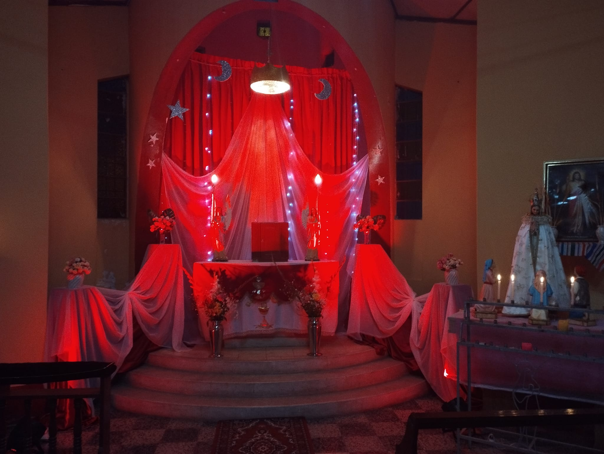
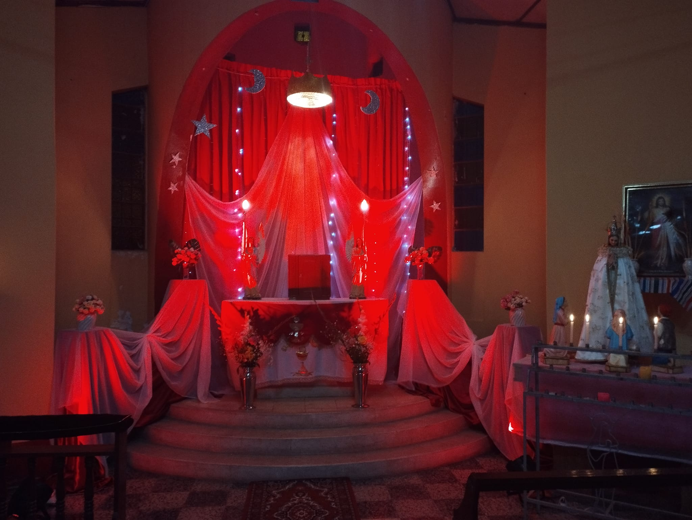
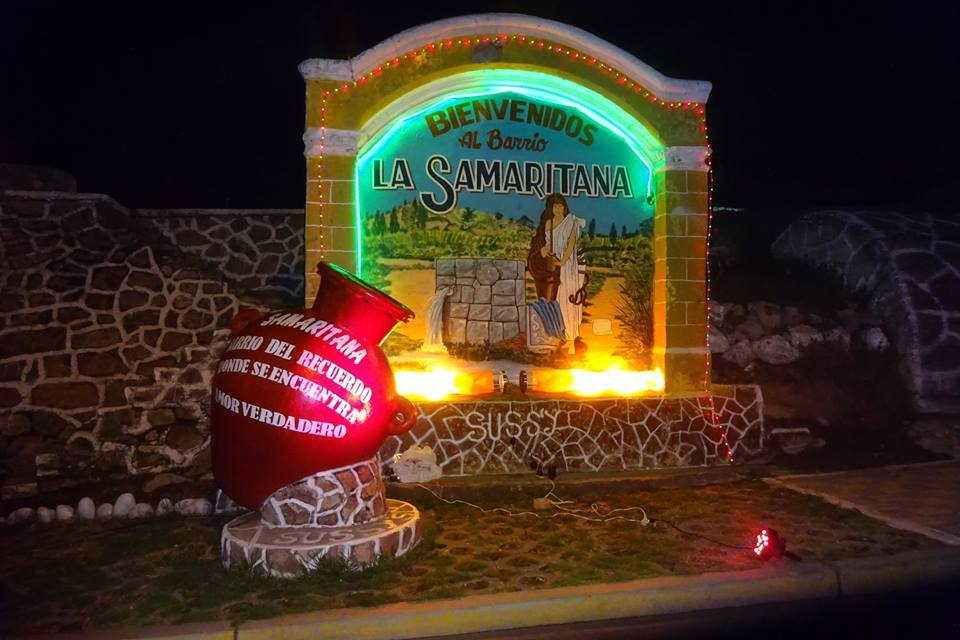
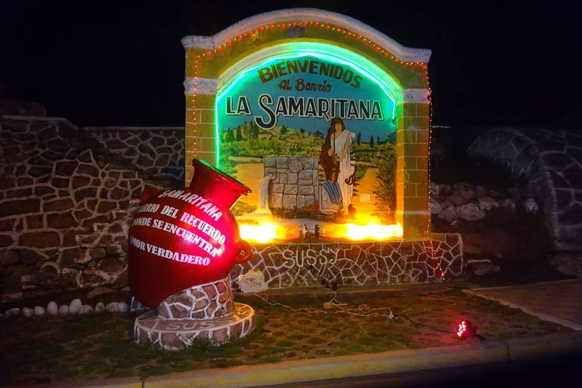
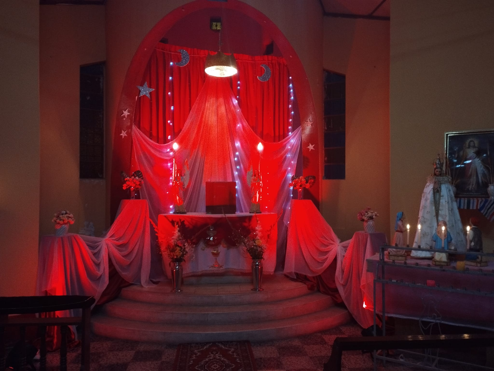
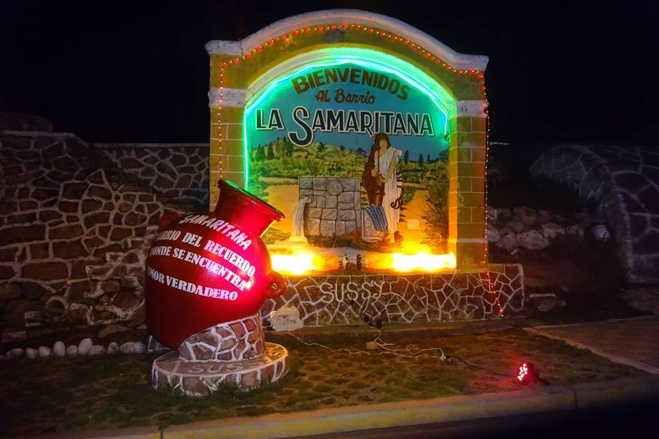

Galeria

 

 



La Virgen de Fátima es una figura muy importante en la fe católica. Según la leyenda, en 1917, tres niños pastores portugueses recibieron varias apariciones de la Virgen María en la ciudad de Fátima. A través de estas apariciones, se les revelaron importantes mensajes y profecías que se convirtieron en la base de la devoción a la Virgen de Fátima. Desde entonces, millones de personas visitan su santuario en Portugal para orar y pedir su intercesión. La devoción a la Virgen de Fátima es apasionante porque representa una conexión directa con la presencia divina y la posibilidad de recibir milagros y bendiciones en la vida cotidiana.

